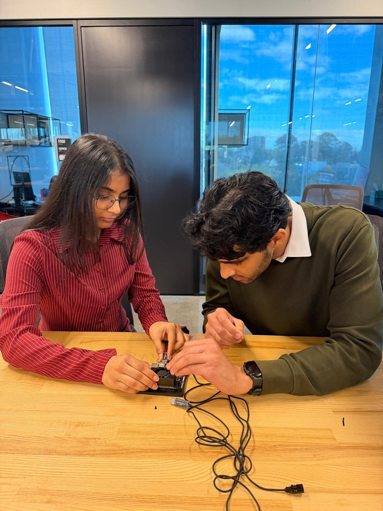

Get your first look at a real engineering project before Senior Design.
You do not need previous research, co-op, or advanced technical experience. You need curiosity, reliability, and a willingness to learn.
See what it’s like from the inside.
Current mentees share what they are learning by working alongside a Senior Design team.
I feel like I’m developing a better engineering thought process and learning to consider things I probably wouldn’t have thought about before.
Learning how sub teams are interdependent on each other, and collaborating while dividing work among teammates works incredibly well.
It is my first major experience with mass data collection as part of a project in this format… It has been nice to see how we need to change our methods when dealing with so much data all at once.
Just seeing how they approach problems, make decisions, and work through things has taught me a lot.
Build experience before someone asks you to already have it.
The program is designed to provide early exposure to the parts of engineering that are difficult to learn from lectures alone.
- See how an open-ended engineering problem evolves over a semester.
- Observe how teams make technical decisions and respond when ideas do not work.
- Learn project documentation, communication, testing, and research practices.
- Ask an upperclassman questions about Senior Design and engineering work.
- Gain context that can help with future co-ops, research, coursework, and your own Senior Design experience.

This is structured shadowing and contribution — not passive observation.
Learn the project
Understand the problem, design goals, technical background, and current progress.
Observe decisions
Ask why the team selected a method, changed direction, interpreted a result, or accepted a tradeoff.
Contribute appropriately
Possible tasks include meeting notes, documentation, literature review, technical summaries, testing observations, data work, or other project-specific activities.
Who should apply?
The current matching focus is on Computer Science and Mechanical Engineering students who have not yet begun Senior Design.
Students from other engineering disciplines may still be able to participate. Email chawlaps@mail.uc.edu to ask whether an appropriate project match may be possible.
GPA is collected as one piece of matching information, but there is no published minimum requirement.
One semester at a time.
Mentees participate for one academic semester. This structure is designed to work with alternating academic and co-op rotations.
A Senior Design project may therefore have one mentee during Fall and a different mentee during Spring. The mentor also decides whether they want to continue mentoring in the second semester.
Honors participation is available, but not required.
The program is a pre-approved University Honors Experience. Eligible Honors students may complete the applicable 75 hours and reflections through their mentee participation.
Non-Honors students are equally welcome to apply and participate.
What the interest form asks.
About you
Major, academic standing, graduation year, GPA, Honors status, semester availability, and co-op rotation information.
What you want to learn
Technical interests, relevant coursework or tools if any, previous experiences if any, why you want to participate, and the types of projects that interest you.
Previous engineering experience is not required. Applications are reviewed initially by Program Coordinator Prissha Chawla for administration and matching.
Apply to become a mentee.
applications are open with no current deadline. Placement depends on available projects and fit.